Urja · design gallery
Direction B restyles Urja in the TerraFlux visual language you pointed to: near-black, warm amber light, gradient and hatched bar charts, pill navigation, a map-led hero with a glass card and a tick rail. Urja’s product thinking is kept: the verdict first, evidence one tap away, and the driver’s side before any rupee is deducted. Click any screenshot to open the live page.
B · Lamplight new · TerraFlux-inspired
Rule of light: the page sits in the dark and only what needs the owner’s eyes is lit: the leaked rupees, the selected flag on the map, the bar for yesterday, the primary action.
The 7 AM message
WhatsApp-style, Hindi by default with an English toggle. The link preview shows the fuel drop at a glance.
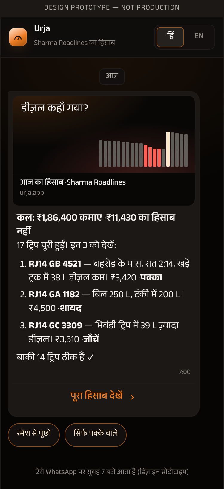
Morning brief (phone)
Earned yesterday with 14 days of context, the three trips to look at, the clean-trip line, September flagged vs recovered, and the Ask box.
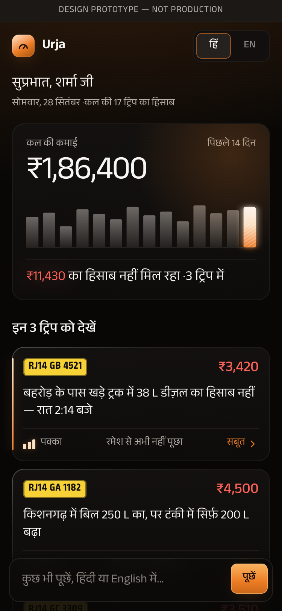
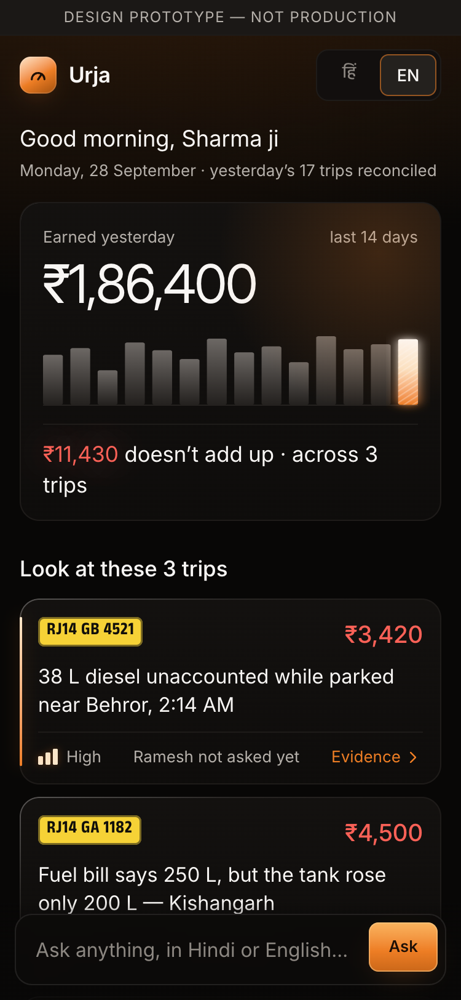
Trip evidence
Flag card with confidence, evidence and the driver’s side; the tilted night map with the tick rail; fuel above the line and speed below it, so a drop while parked is unmistakable; timeline and ledger.
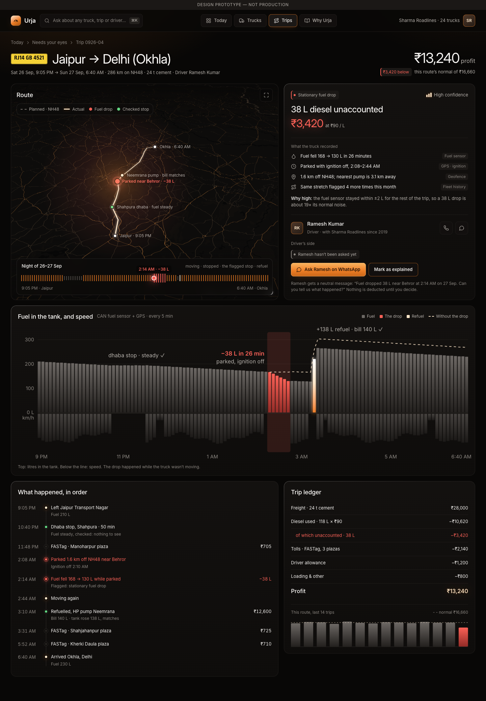
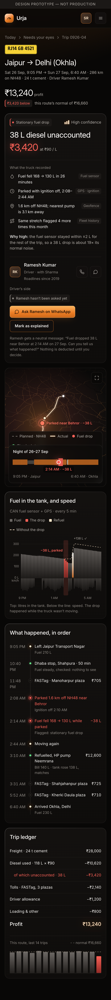
Today (the dashboard)
The verdict, the ledger as one bar, and the hero card: a live 3D truck scene (TerraFlux-style: glowing edge strips, marker lamps, light trails on NH48) reconstructing the flagged moment, with the fuel tank lit red. Switch it to Map (the flags on a tilted night map, linked to “Needs your eyes”) or Fleet. Then September as four chart cards including “When Urja was wrong”, and trucks by profit per km. Drag the truck to look around it.
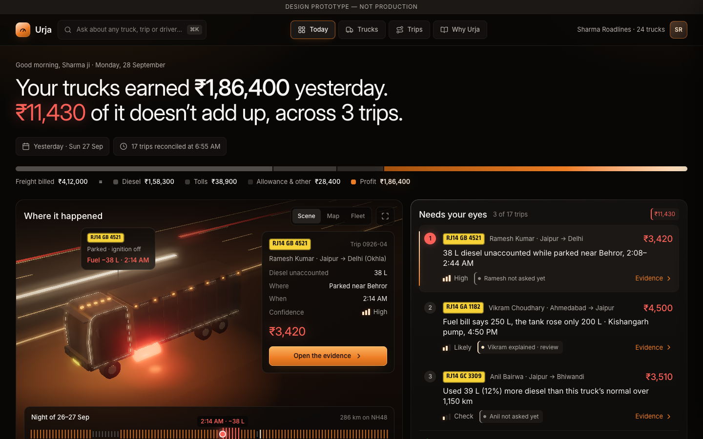

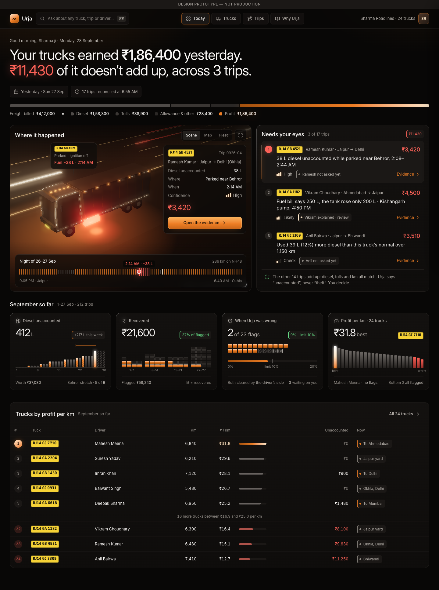
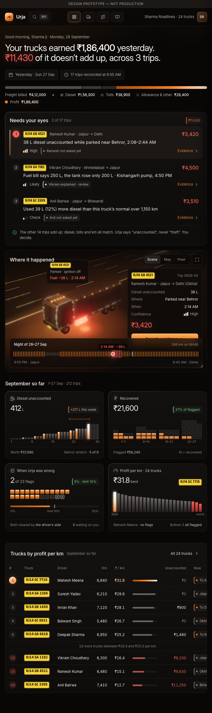
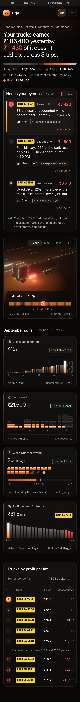
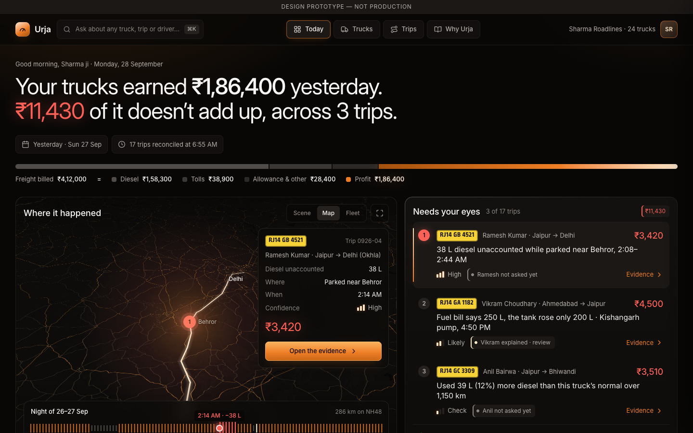
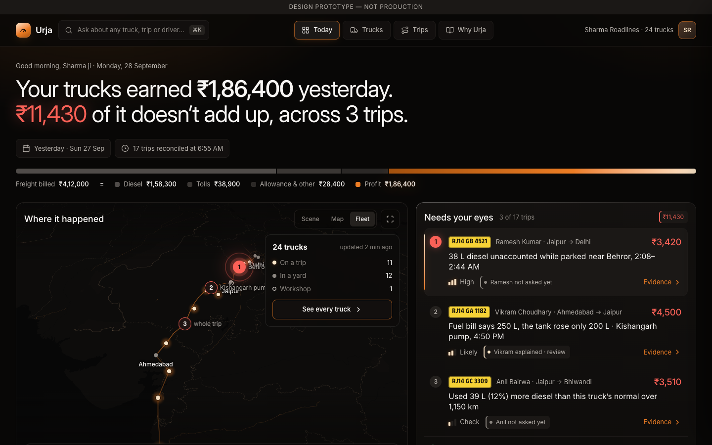
Ask Urja
Answers in the question’s language, cites the trips it used, states scope and model, and says it can be wrong.
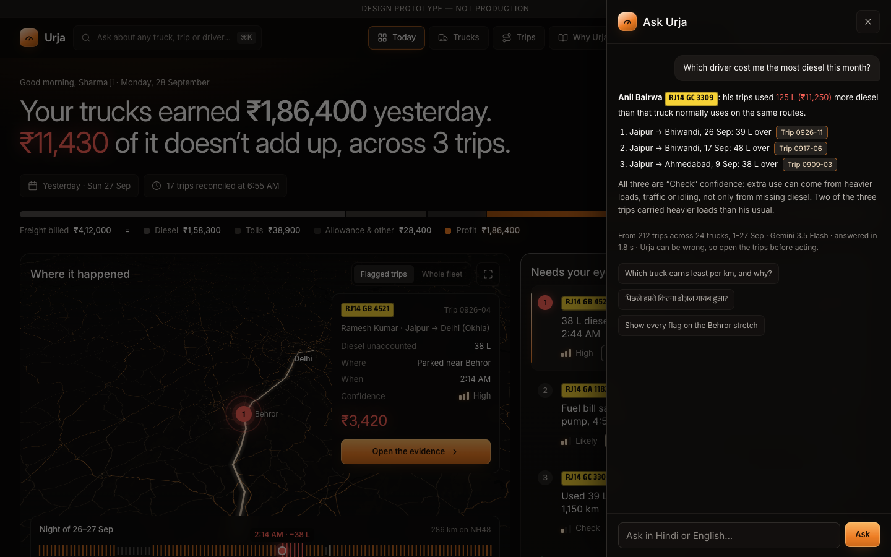
Still in direction A’s look
Screen states, Why Urja and the link-preview image. They get the B treatment once you approve this direction.
A · The Munshi’s Ledger (previous direction, for comparison)
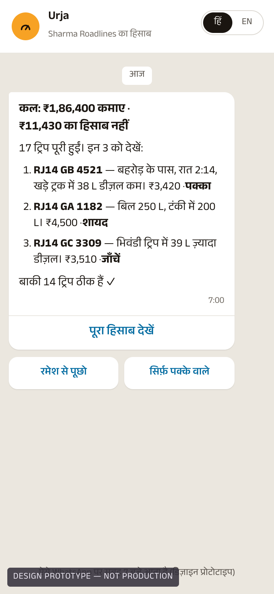
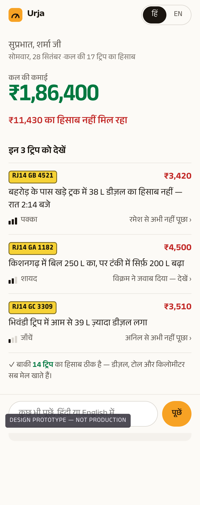
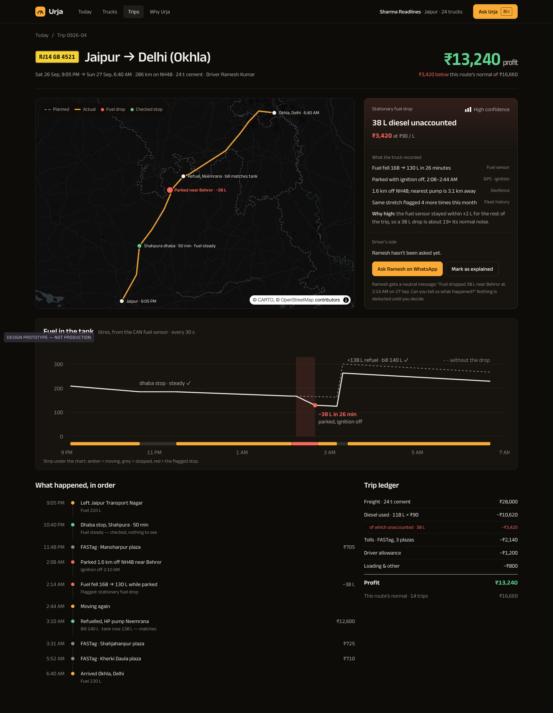
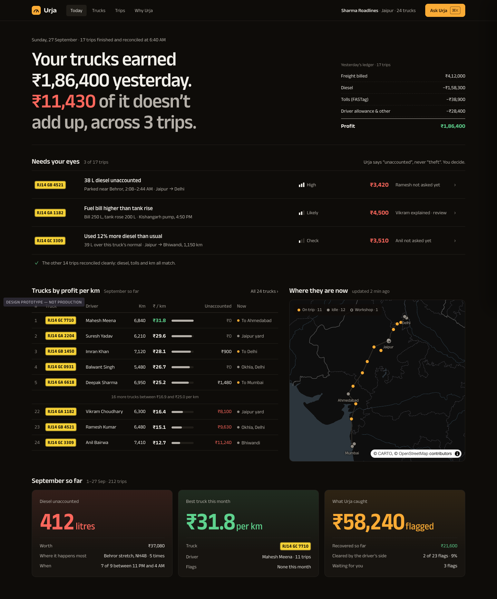
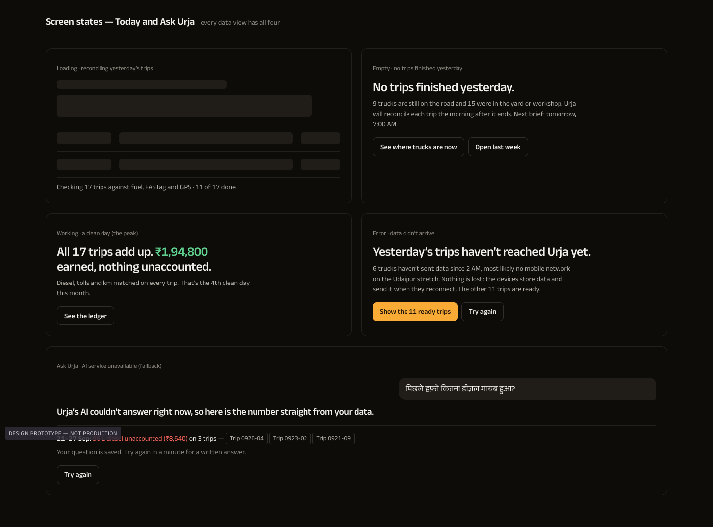
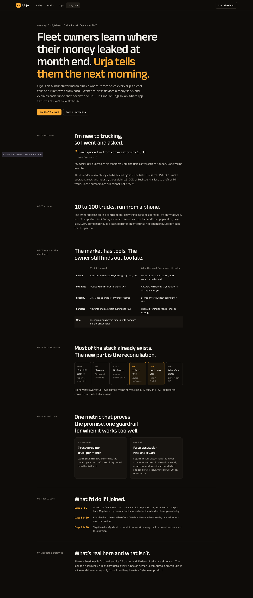
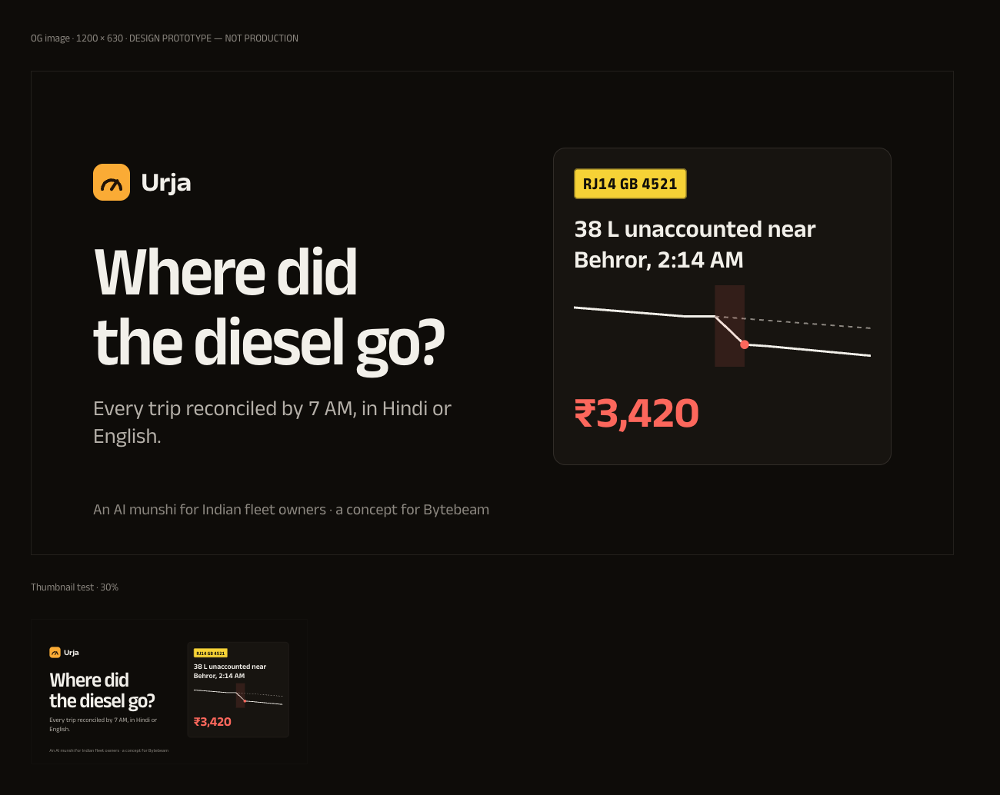